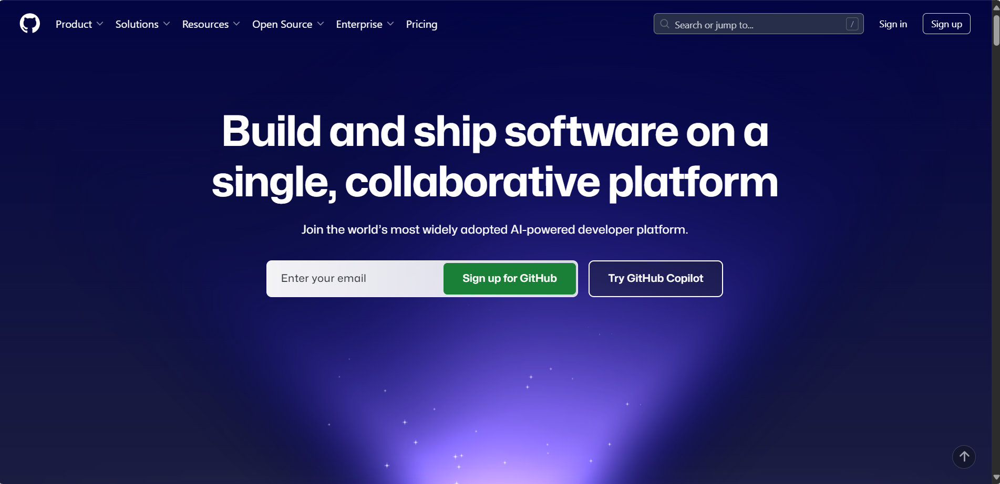
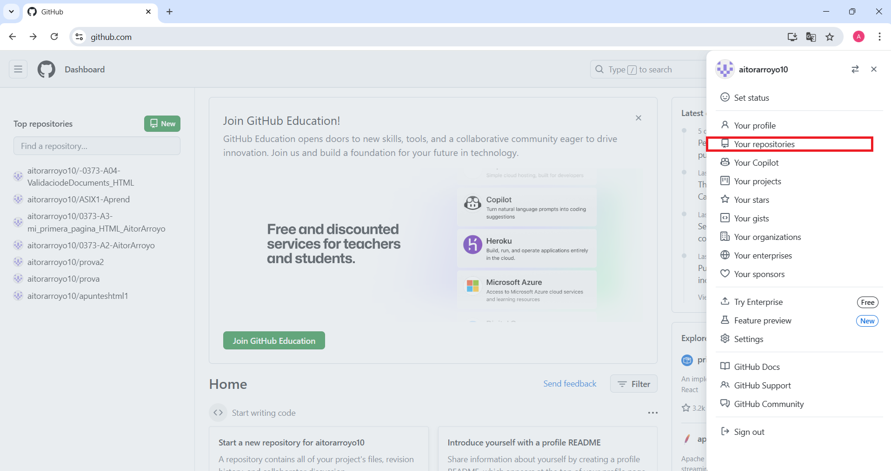
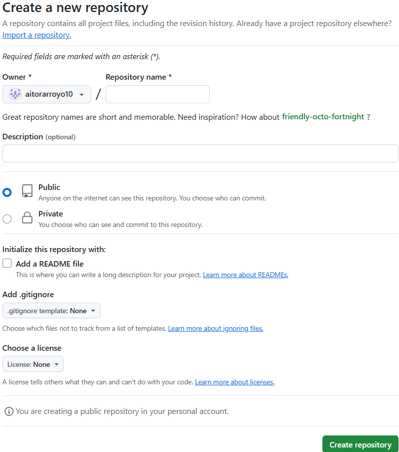
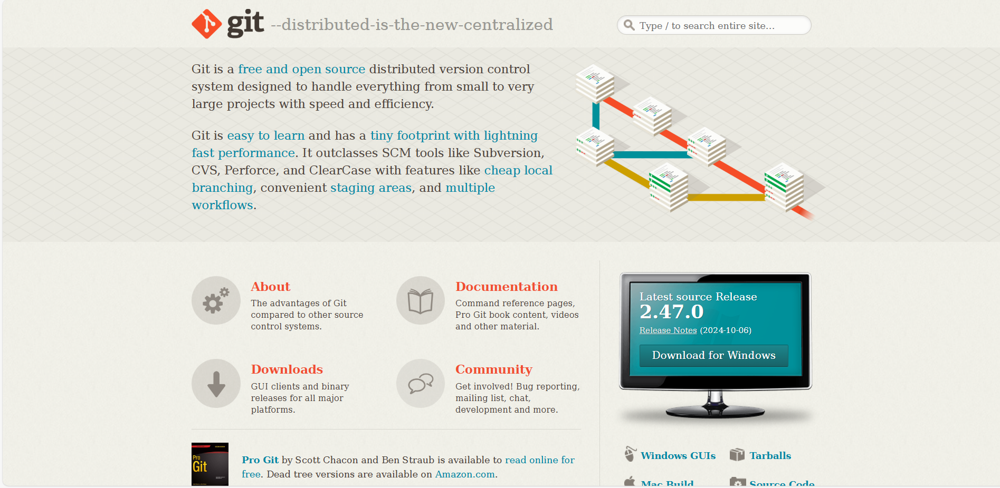
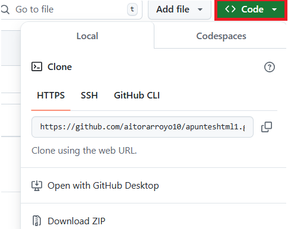

Primer paso: Iniciar sesión o registrarse en github a través del siguiente enlace: Github
Segundo paso: En la esquina superior derecha, hacer clic en tu foto de perfil y acceder al apartado "Your repositories".
Tercer paso: Una vez accedemos al apartado de nuestros repositorios, seleccionaremos la opción "new" para crear uno nuevo.
Cuarto paso: Aquí podremos configurar la creación de un nuevo repositorio, como su nombre, estado de publicación, etc.
Quinto paso: Instalaremos la herramienta GIT
Sexto paso: Para clonar nuestro repositorio, tendremos que acceder a este, clicar en "Code" y copiar la url. Una vez hecho esto, abriremos el CMD y accederemos a la ruta donde queremos que esté guardado. Si ya tenemos git instalado, utilizaremos la función "git clone" con la url del repositorio para poder clonarlo de forma local.
Séptimo paso: Para poder inicializarlo, tendremos que ejecutar la orden "git init" dentro de la carpeta donde querremos que se ejecute el repositorio. Para poder añadir los elementos que van a incluirse en la nuevo versión, se utiliza la función "git add". Si se le añade un "." al final, se añadirán todos los elementos de la carpeta. Finalmente, para poder añadir un mensaje y posteriormente subirlo al repositorio remoto, con "git commit -m "mensaje"" escribiremos un mensaje y añadiremos todos los cambios con "git push origin (rama)".
git init: Comando de inicialización de repositorios GIT en la ubicación actual.
git add: Comando de adición de elementos que van a incluirse en la nueva versión de los archivos del repositorio.
git commit -m "": Comando para empaquetar archivos con un mensaje.
git push origin main: Comando de sincronización de elementos con la rama.
H1 = #
H2 = ##
H3 = ###
H4 = ####
H5 = #####
H6 = ######
Cursiva = *texto* o _texto_
Negrita = **texto** o __texto__
Anidar estilos = **palabra1 _palabra2_**
Ordenadas = etiqueta ol (ordered list)
Desordenadas = etiqueta ul (unordered list)
Etiqueta para cada elemento de lista: etiqueta li
Para crear un bloque de texto, se introduce una línea en blanco.
Se incluye entre acentos abiertos (`). Se introduce entre dos veces al principio del código.
Para añadir un enlace, se añade la etiqueta "a href="link""
Para añadir una imagen, se añade la etiqueta "img src="ruta""
Tabla: Para añadir una tabla, se añade la etiqueta table
Columna: Etiqueta "||".
HTML es el lenguaje de marcas estándar para crear páginas web. Sin HTML, no se vería nada en el navegador. Define la estructura y contenido, es decir, si hay una imagen, lista, enlace o elemento de las páginas web mediante etiquetas, es muy adaptable, con estructura lógica, fácil de entender e interpretar. Sus siglas significan "HyperText Mark Language".
HyperText: Texto que enlaza mediante otros contenidos que pueden ser otro texto u archivo.
Markup: Significa marca o etiqueta, ya que todas las páginas web están construidas en base a etiquetas, desde las primeras versiones hasta las últimas etiquetas de HTML5. Un ejemplo es la que identifica un párrafo, que se compone de etiqueta.
Etiqueta de apertura: Consiste en nombre de elemento, encerrado entre paréntesis angulares de apertura. Establece el principio de una etiqueta.
Etiqueta de cierre: Consiste en nombre de elemento, encerrado entre paréntesis angulares de apertura de cierre. Establece el final de una etiqueta.
Contenido: Contenido de elemento, como el texto.
Elemento: Etiqueta de apertura, etiqueta de cierre y el contenido equivale el elemento.
DOCTYPE HTML: Tipo de documento y préambulo necesario. Debe ser incluido para que todo funcione correctamente.
Etiqueta html: Encierra el contenido de la página web, a veces conocido como elemento root (raíz).
Etiqueta head: Contenedor que encierra el contenido no visible por los visitantes.
Etiqueta body: Encierra todo el contenido que ven los usuarios en la web, como texto, imágenes, vídeos, etc.
Rutas relativas: Orden de directorios.
Rutas absolutas: Nombres de dominio.
Span : Permite agrupar contenido en línea
div : bloque donde podemos guardar o acumular una serie de etiquetas
El HTML semántico consigue describir el contenido dándole un significado de forma correcta
Formulario web: Interactúa con el usuario y para que un usuario pueda transmitir datos los cuales son enviados a un servidor para ser procesados
action: Define URL donde se enviarán los datos
method: Especififíca el método de envío de datos
target: Indica dónde se debe mostrar la respuesta al enviar el formulario.
self: Respuesta en misma ventana
blank: Respuesta en nueva ventana
input: Etiqueta de entrada de datos
type : Etiqueta con el tipo de control a mostrar
type button: Enviar datos a otra parte
name: Nombre de variable
value: Valor de variable, si no se pone nada
placeholder: Texto que aparece en el campo cuando está vacío, ofreciendo una pista sobre qué tipo de dato se debe ingresar
required: Indica que el campo debe completarse antes de enviar el formulario
disabled: Desactiva el campo
input type radio: Se agrupa con otros de mismo nombre
input type checkbox: Permite selecciones múltiples
textarea: Se usa para crear un área de texto en la que los usuarios pueden ingresar múltiples líneas de texto.
label : Etiqueta para atribuir